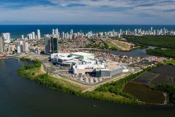

Top destinos mais buscados hoje no Brasil:

Rio de Janeiro
O Rio de Janeiro é uma grande cidade brasileira à beira-mar, famosa pelas praias de Copacabana e Ipanema, pela estátua de 38 metros de altura do Cristo Redentor.
Ver passagensSão Paulo
São Paulo, centro financeiro do Brasil, está entre as cidades mais populosas do mundo, com diversas instituições culturais e uma rica tradição arquitetônica.
Ver passagens

Recife
Recife, a capital do estado de Pernambuco, no nordeste do Brasil, distingue-se pelos seus vários rios, pontes, ilhéus e penínsulas. Recife Antigo, na própria ilha.
Ver passagens